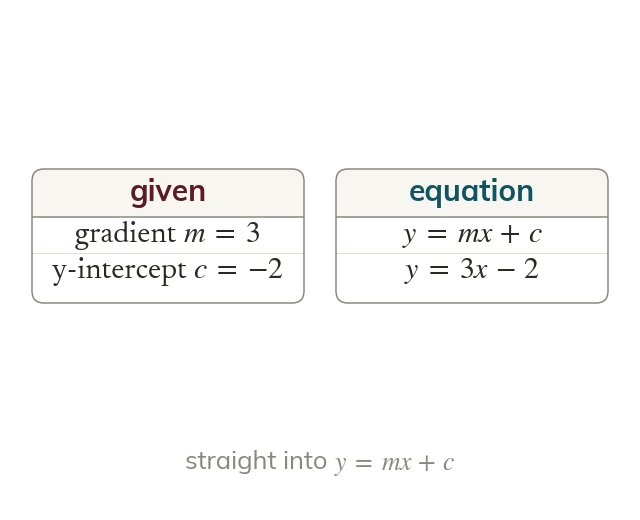

Gradient and intercept
A given gradient and y-intercept go straight into Gradient and intercept give
When the gradient and the y-intercept are given, they go straight into A line with gradient that crosses the y-axis at has the equation